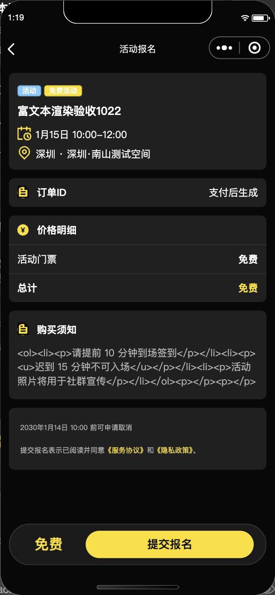
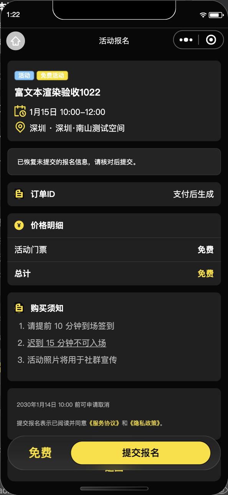

2026-10-20 · 基线 325a9c3e · 分支 codex/event-media-and-player-pricing · DevTools 390×844 · 真实测试库活动「富文本渲染验收1022」。未修改生产环境。


两张图为原始截图。同一数据、角色和视口。修改后重新进入页面，自动恢复了本轮检查产生的本地空草稿；通过 reLaunch 进入，因此导航及提示条与修改前不同。没有拼接、隐藏功能或伪造业务数据。本批修复数据读取与渲染，未按原型调整布局。
| 问题 | 已查证原因 | 修复 |
|---|---|---|
| 部分用户看不到活动图片 | 存储桶权限为 PRIVATE；客户端直接下载，其他用户可能无权限。临时文件也可能被系统清理。 | 服务端核对公开活动或本人历史订单的图片引用后生成短期地址回退；存储保持私有，缓存到期重取，已删除临时文件重下。 |
| 订单确认页出现标签代码 | 活动须知为 HTML；报名确认页使用普通 view 插值显示。 | 活动详情与报名确认复用受限 HTML/Markdown 节点渲染和图片解析；须知历史签名图片也转回稳定引用。 |
共用图片通道覆盖活动列表、详情、报名确认、我的活动、订单列表、订单详情及公开回顾。其他用户真机、多网络仍需分别验证，不能由这组截图代替。
建议仅对付费活动增加「玩家免费」开关，默认关闭。开启后，由服务端按报名时有效会员权益决定玩家免费、嘉宾按活动票价付款；已有订单金额不改，历史活动不自动开启。保留现有「仅玩家」类型。详情、列表、报名确认、后台预览和配置共同更新，并验证身份到期、并发、库存、重试及订单恢复。
当前：图文修复已实现，完整 verify:all 通过（小程序 279 套件、1,815 项测试；Web 与服务端门禁通过）。同一真实测试活动重新进入后，须知已显示为富文本。测试云函数更新待执行，尚未上传本批体验包。收费改动未实施。生产只做只读诊断，未部署。